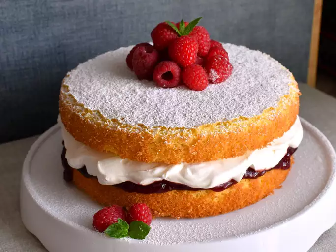

Victoria Sponge Cake

Description
The Victoria sponge cake is a simple British dessert that lives up to its iconic reputation. This light and tender Victoria sponge recipe is the perfect sweet treat to brighten your day.
Ingredients
- For the cake: Baking spray, all-purpose flour, baking powder, cornstarch, kosher salt, granulated sugar, butter or margarine, eggs, vanilla extract, whole milk, and strawberry or raspberry preserves.
- For the whipped cream: Heavy whipping cream, powdered sugar, and vanilla extract.
- To garnish: Powdered sugar and fresh strawberries.
Directions
- Sift the dry ingredients together in one bowl and set aside.
- Beat the butter and sugar with a mixer, then beat in the eggs and vanilla.
- Mix in the flour mixture on low speed, alternating with the milk.
- Bake in the prepared cake pans until a toothpick comes out clean.
- Spread the preserves on the top of one cooled cake layer.
- Make the whipped cream, then spread over the preserves.
- Top with the remaining layer, duster with powdered sugar, and top with berries.